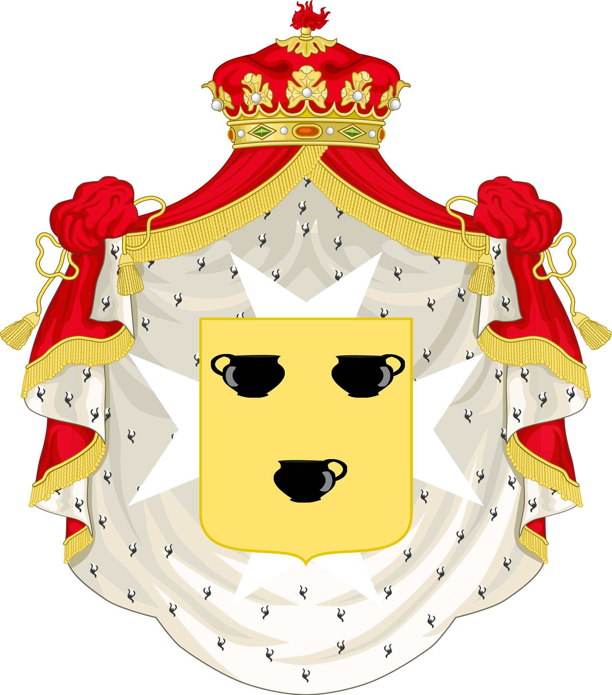

One companion, several roles
Begin with “my family-history researcher.” Your agent can help research a connection, organize a source, translate a passage, or tell a sourced story. Dedicated specialist agents can come later.
A project we can shape together · Un progetto di famiglia
Connect our branches. Bring our stories to life. Give each member an AI companion that helps them explore, contribute, and keep learning.
You don’t need to be technical to help. A question, a good source, or a child’s perspective can shape what we build next.
Share an idea Explore the current demo →
Our starting direction
These are the starting decisions Paolo has made for discussion with the family. The personal agents and child accounts are planned features.
Begin with “my family-history researcher.” Your agent can help research a connection, organize a source, translate a passage, or tell a sourced story. Dedicated specialist agents can come later.
A designated parent or guardian approves the scope. A child might ask, “Where did my grandmother live when she was my age?” Sharing, outside contact, and spending need appropriate adult approval.
Show how we know a connection, where a source came from, and what is uncertain. An interesting possibility can remain a possibility while we investigate it.
Questions for the family
Pick one question to discuss in WhatsApp. Ideas are welcome in English, Italian, or whichever language you use at home.
What first task would you give your personal agent? A family connection, a place, a book, a photograph, or something else?
How should we attach a book page or a family recollection to a claim, and help one another check it?
What should your agent do on its own? What should it ask you or a supervising adult to approve?
What should an agent remember between visits, and how should it bring a useful unanswered question back to you?
Build with us
Technically experienced relatives can own a bounded part of the construction. Other members can help test, translate, check sources, or make the experience welcoming.
Help design simple sign-in, family membership, and clearly assigned guardian permissions.
Make it easy to submit a phone snapshot, name its source, review a transcription, and propose a relationship.
Help agents retain assignments, sources, approved actions, and questions across visits.
Try the site on your phone, improve the wording, translate it, or help make it enjoyable for younger relatives.
Paolo coordinates direction with ChatGPT. Cursor assists with implementation and maintenance. Volunteer ownership will be agreed in the family conversation; no tasks have been assigned by this page.
The current project uses a static public site and a separate Node service on Vercel. Start with the repository’s AGENTS.md and docs/CURSOR_HANDOFF.md, then propose one small change on a branch. Ask Paolo to coordinate repository access and review before deployment.
Open the project repository →Our discussion stays together
Prepare a message below, then choose our family group in WhatsApp or copy it into the conversation. This page is public; it has no comment feed, member directory, or submission database.
Your draft stays in this page until you choose to share it. Reloading clears it.
Paolo can bring ideas here for ChatGPT to organize, question, and turn into drafts or demonstrations. He reviews what goes back to the family. This page has no live AI participant and does not read WhatsApp messages.
Planning snapshot · 6 October 2026. The current demo includes the crest, relationship explorer, historical connection example, and a protected agent pilot. Personal agent accounts, family login, uploads, and durable agent memory are still to be built.